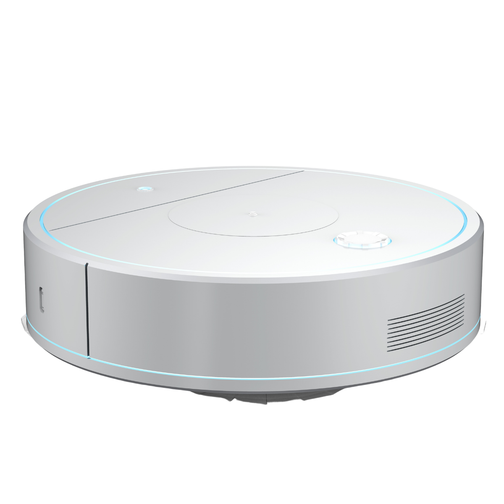
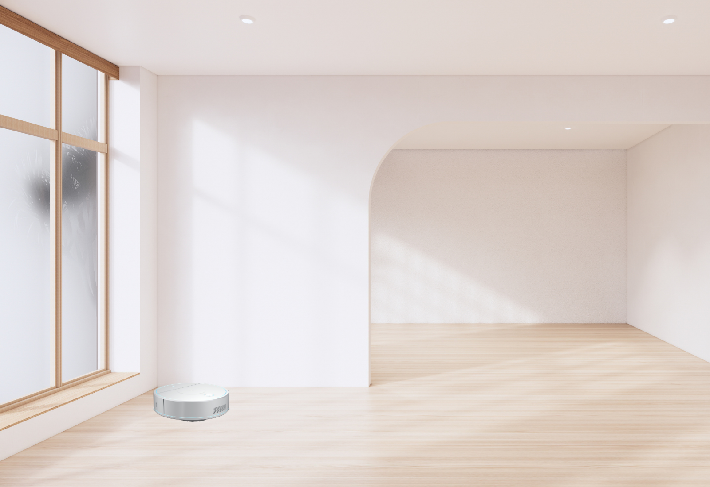

Robot Vacuum
SweepMate Model V8
An app-controlled robot vacuum designed to provide up to 150 minutes of automated floor cleaning per battery cycle.
- Provides up to 150 minutes of battery runtime
- Delivers up to 4,000 Pa of suction power
- Supports remote control through an app
Smart Floor Care

SweepMate Robot VacuumModel V8
Automated everyday floor care
Designed for extended cleaning cycles
Cleanora SweepMate V8 is an app-controlled robot vacuum with a maximum battery runtime of 150 minutes.
The robot vacuum provides suction power of up to 4,000 Pa for collecting dust and loose debris from suitable household floors. Collected material is stored in an integrated 400 ml dustbin.
SweepMate V8 can be controlled through its compatible app. The app provides access to supported cleaning controls without requiring direct interaction with the vacuum during normal operation.
Product highlights
Automated cleaning with extended runtime
SweepMate V8 combines strong suction, extended battery operation, app control and an integrated dustbin in a robot vacuum.
Up to 150 minutes of runtime
A fully charged battery supports a maximum cleaning runtime of up to 150 minutes under suitable operating conditions.
4,000 Pa suction
SweepMate V8 provides maximum suction power of 4,000 Pa for collecting household dust and loose floor debris.
400 ml dustbin
The integrated dustbin provides 400 ml of capacity for material collected during a cleaning cycle.
App control
A compatible app provides access to supported remote controls for routine cleaning operation.
Automated floor cleaning
The robot vacuum moves across suitable household floors while collecting dust and loose debris.

Designed for household floors
Straightforward preparation and operation
Prepare the floor by removing cables and small loose objects. Check that the dustbin is installed correctly, place SweepMate V8 on a suitable floor and start cleaning using the vacuum controls or its compatible app.
- Extended cleaning time
Operate the vacuum for up to 150 minutes on a fully charged battery under suitable conditions.
- Remote operation
Use the compatible app to access supported controls without directly operating the vacuum.
- Removable dustbin
Remove and empty the 400 ml dustbin after cleaning or when it reaches its practical capacity.
Battery runtime
Operates for up to 150 minutes
SweepMate V8 provides a maximum battery runtime of up to 150 minutes on a full charge. Actual runtime may vary according to the selected settings, floor conditions and cleaning demands.
Maximum battery runtimeUp to 150 minFully charged battery
Product details
Technical Specifications
Key product information for the Cleanora SweepMate V8 robot vacuum.
| Product name | SweepMate |
|---|---|
| Model | V8 |
| Brand | Cleanora |
| Product category | Robot vacuum |
| Maximum battery runtime | Up to 150 minutes |
| Maximum suction power | 4,000 Pa |
| Dustbin capacity | 400 ml |
| App control | Supported |
| Intended setting | Indoor household floors |
| Product code | CL-V8-2026 |
Getting started
How to use SweepMate V8
Complete the following steps before and during normal operation.
- 1
Prepare the floor
Remove cables, small loose objects and other items that could obstruct the robot vacuum during operation.
- 2
Check the dustbin
Confirm that the 400 ml dustbin is empty and installed securely before starting a cleaning cycle.
- 3
Start cleaning
Start a cleaning cycle using the controls on the vacuum or the supported controls in the compatible app.
- 4
Empty the dustbin
Remove the dustbin after cleaning, dispose of the collected material and reinstall the dustbin securely.
Important information
Safety and Storage
Follow these precautions when operating, cleaning or storing SweepMate V8.
Important precautions
- Use the robot vacuum indoors in a dry environment.
- Keep it away from wet floors and standing water.
- Remove cables and small objects before operation.
- Do not use the vacuum if it is visibly damaged.
Dustbin and surface care
- Empty the 400 ml dustbin regularly.
- Switch off the vacuum before cleaning its exterior.
- Remove trapped debris from accessible cleaning parts.
- Allow cleaned components to dry before reinstallation.
Keep the vacuum protected
Switch off SweepMate V8, empty the dustbin and store the vacuum in a cool, dry indoor location. Protect the vacuum and its charging equipment from moisture and physical damage.
Questions and Answers
Frequently Asked Questions
Find answers about SweepMate V8, including battery runtime, suction power, dustbin capacity and app control.
Q What is the battery runtime of SweepMate V8?
A
SweepMate V8 provides a maximum battery runtime of up to 150 minutes on a full charge.
Q Is the 150-minute runtime always the same?
A
No. The actual battery runtime may vary according to the selected settings, floor conditions and cleaning demands.
Q How much suction power does SweepMate V8 provide?
A
SweepMate V8 provides maximum suction power of 4,000 Pa.
Q What is the capacity of the dustbin?
A
SweepMate V8 includes an integrated dustbin with a capacity of 400 ml.
Q Can SweepMate V8 be controlled through an app?
A
Yes. SweepMate V8 supports remote operation through its compatible app.
Q Who manufactures SweepMate V8?
A
SweepMate V8 is manufactured and distributed by Cleanora.